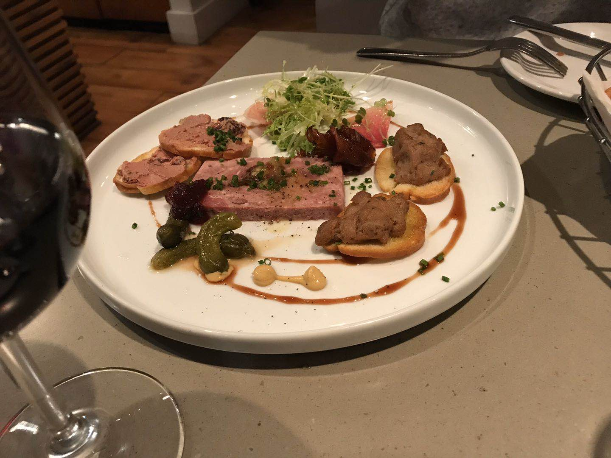

About the city
Vancouver is a coastal seaport city in western Canada, located in the lower mainland region of British Columbia. As the most populous city in the province, the 2016 recorded 631,486 people in the city. Vancouver is consistently named as one of the top five world wide cities for livability and quality of life, and the Economist Intelligence Unit acknowledged it as the first city ranked among the top ten of the world's most well-living cities for ten consecutive years. Vancouver was originally named Gastown and began as a settlement which grew around the site of a makeshift tavern on the western edges of Hastings Mill built.
The city population in Vancouver is 631,486 and the country population in Canada is 35,151,728. Vancouver is a Coastal city in North America. The daily maximum averages 22 °C (72 °F) in July and August, with highs rarely reaching 30 °C (86 °F). The total area of Vancouver is 44.36 sq mi and the population density is 14,226/sq mi. There has 26.5% of population in Vancouver are Chinese, 47.2% are Canadian and 26.3 are from other nation.
The major economic sectors in Vancouver include trade, film/TV, technology, turism, natural resources, and construction. The port of Vancouver is the largest port in Canada, and the third largest port in the Americas. The bridge Studios is one of several film studios in Metro Vancouver.


Cuisine
Grill Sushi and Kobe beef Sushi
It is modified Japanese Sushi with Canadian flavor, it will be sweeter and has more structure in the mouth.
Franch grill Foie gras
Foie gras is a popular and well-know delicacy in French cuisine and been brought to Vancouver with modification. Its flavor is described as rich, buttery and delicate, unlike the ordinary duck or goose liver.It usually been served with bread or steak.
Seafood Soup
It come with full of small lobster, corn, sausage and scallops.
Celebrities
Movie Star: Jiatai Zhang
Jessica Lowndes
Jessica Lowndes is a Canadian actress and singer-songwriter. She is best known for her roles as Adrianna Tate-Duncan on The CW teen drama series 90210 and for appearing in several Hallmark Channel movies. Lowndes was born in Vancouver, British Columbia and attended Pacific Academy in Surrey. She made her acting debut on the 2005 television film Saving Milly as Andrea Kondracke at the age of 16. This was followed by a guest role on an episode of Masters of Horror, she was later cast as Becky, a recurring role in the sitcom Alice, I Think. She also made a guest appearance on Kyle XY. Her next film role was a supporting role in the Lifetime movie To Have and to Hold released in 2005, followed by a pilot called Pretty/Handsome in 2007—which did not get picked up. She has been playing the piano since she was five and writing music since she was nine years old. Lowndes made her musical debut in the pilot episode of TV series 90210 singing "Mama Who Bore Me" from Spring Awakening in the school's musical, in the 2009 episode "Women's Intuition".
Refernces
The banner picture was took by me.
The pictures in about section were took by me.
The Sushi picture in Cuisine was took by me.
The Foie gras picture in Cuisine was took by me.
The Seafood soup picture in Cuisine was took by me.
The DVD cover image in celebrities was created by me.